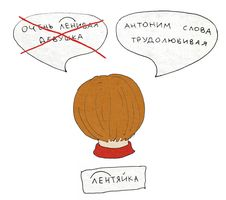
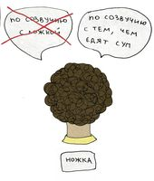
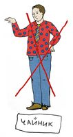
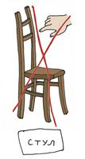
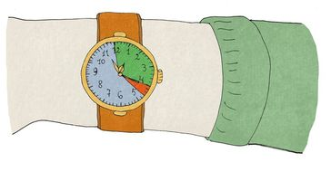

Общие правила игры
- Цель игры – за ограниченное время объяснить партнёру как можно больше слов, вытянутых
из шляпы.
-
Общий ход игры
Игроки садятся вокруг стола
(обычно — 6-10 человек). В шляпе находится некоторое количество слов, написанных на бумажках;
игроки этих слов не знают. В каждый момент времени играют два человека — объясняющий и отгадывающий,
остальные игроки ждут своей очереди и слушают. Объясняющий игрок по команде судьи достаёт из шляпы бумажку, читает написанное на ней слово (про себя) и
объясняет это слово отгадывающему игроку, не используя слова, однокоренные загаданному. Отгадывающий
игрок предлагает версии до тех пор, пока не назовёт загаданное слово. После этого объясняющий
откладывает бумажку с ним в сторону, достаёт следующую бумажку и объясняет следующее слово. Отгаданные
слова в шляпу не возвращаются. По истечении времени судья останавливает игру. Если слово не отгадано, то
объясняющий возвращает бумажку в шляпу, не сообщая игрокам и зрителям загаданного слова. После этого
шляпа переходит к следующему по часовой стрелке игроку.
Объясняющий игрок по команде судьи достаёт из шляпы бумажку, читает написанное на ней слово (про себя) и
объясняет это слово отгадывающему игроку, не используя слова, однокоренные загаданному. Отгадывающий
игрок предлагает версии до тех пор, пока не назовёт загаданное слово. После этого объясняющий
откладывает бумажку с ним в сторону, достаёт следующую бумажку и объясняет следующее слово. Отгаданные
слова в шляпу не возвращаются. По истечении времени судья останавливает игру. Если слово не отгадано, то
объясняющий возвращает бумажку в шляпу, не сообщая игрокам и зрителям загаданного слова. После этого
шляпа переходит к следующему по часовой стрелке игроку.
- Частности
- Загадываемые слова — существительные нарицательные в единственном числе (если оно есть;
«ножницы» и т.п. загадывать можно, также допустимы слова, у которых в множественном числе есть
отдельное значение, например, «выборы»).
- Объясняющему запрещено произносить слова, однокоренные загаданному слову. Это
относится и к словам иностранного происхождения, очевидно имеющим общий корень не в русском
языке, а в каком-либо другом (например, «монах» нельзя загадывать через «монастырь»). Слова,
имеющие ту же приставку или суффикс, что и загаданное, произносить можно, не сообщая при этом,
что у загаданного слова такая же приставка или суффикс.
- Объясняющему запрещено произносить слова, созвучные загаданному слову (а также
слова, имеющие общие морфемы с загаданным), сообщая явно или намекая при этом (например, выделяя
интонацией), что слова созвучны (или имеют общие морфемы).

Исключение: если слово объясняется как пропуск в какой-то известной фразе или
логической последовательности (то есть созвучие не является ключевым элементом объяснения):
«трамвай, автобус, …» (в латинском -bus является суффиксом), «муха села на варенье, вот и всё …».
-
Все слова, используемые в объяснении должны присутствовать в русском языке.
То есть запрещено объяснять «дактиль» как «птеро…» (русском языке нет слова «птеро»).
- Объясняющий не может никаким образом апеллировать к буквам и
слогам загаданного слова («первая буква – такая же, как и у …», «убери последние четыре
буквы», «слово из трёх слогов» и т.п.). В частности, нельзя загадывать слова через анаграммы или
аббревиатуры («анаграмма от слова рост», «первое слово в СНГ», «а теперь переверни (объясённое слово)»).
Однако разрешено апеллировать к частям слова, не уточняя их размер
(«измени начало слова», «середина – как у слова, которое …»), а также к морфемам («измени
окончание», «возьми приставку, как у моей фамилии»).
- Также запрещено при объяснении передавать любую информацию мимикой или жестами.
 
- При объяснении слова нельзя пользоваться переводами в случае, если одного из
слов (сказанного объясняющим или его перевода) нет в русском языке с тем же значением. Например:
нельзя говорить «хенд по-русски», «солнце по-английски» (загаданы рука и сан).
Однако, если иностранное слово заимствованием перешло в русский язык, называть его можно:
«рефрижератор по-простому», «установка по-английски». Если загадано иностранное слово,
допускается говорить, из какого языка оно заимствовано, и произносить перевод: «любослов
по-гречески».
- Если слово загадывается не через смысл, а по созвучию или по частям, то к объяснению любого из
вспомогательных слов также относятся ограничения 2-7.
- Если объясняющий называет однокоренное с загаданным слово или иным образом нарушает правила 2-8,
он возвращает слово в шляпу (сам или по рекомендации судьи) и передаёт шляпу следующему игроку,
тем самым завершив свой ход. Если факт нарушения фиксируется после окончания хода, то слова,
загаданные с нарушением или после него, не засчитываются.
- Если игроку кажется, что при объяснении произошло нарушение правил, он может привлечь внимание
судьи, молча подняв руку, но ни в коем случае не пытаться прервать объяснение.
- Если отгадывающий называет слово, однокоренное загаданному, слово ещё не считается отгаданным.
При этом объясняющий может сообщить о том, что загадано однокоренное слово, и попросить уточнить
словоформу. Если названное слово отличается только числом/падежом, то оно считается отгаданным.
Также в качестве ответа принимаются омофоны загаданного слова («луг» вместо «лук»).
- Объясняющий, отчаявшийся объяснить вытянутое слово, может вернуть его в шляпу и досрочно
закончить объяснение. Заменить слово на другое не разрешается.
- Время, отведённое на загадывание слов каждой парой игроков, — 20 секунд. После
слов судьи «время» объясняющий перестаёт объяснять, а у отгадывающего есть ещё 3
секунды и одно слово на то, чтобы дать ответ, после чего судья говорит «всё», и
ответы больше не принимаются. Если загадывающий не смог остановиться после сигнала «время»,
право трёх секунд отгадывающему не даётся.

- Игроки, не загадывающие и не отгадывающие слово в данный момент, не должны ни мешать, ни
помогать играющей паре. Не допускается никаким образом обсуждать ещё не отгаданные слова.
- Спорные ситуации, а также ситуации, не описанные в правилах, разрешаются проводящим игру
судьёй. В сложных случаях судья может отложить принятие окончательного решения до обсуждения
с остальными судьями (сделав об этом пометку в протоколе).